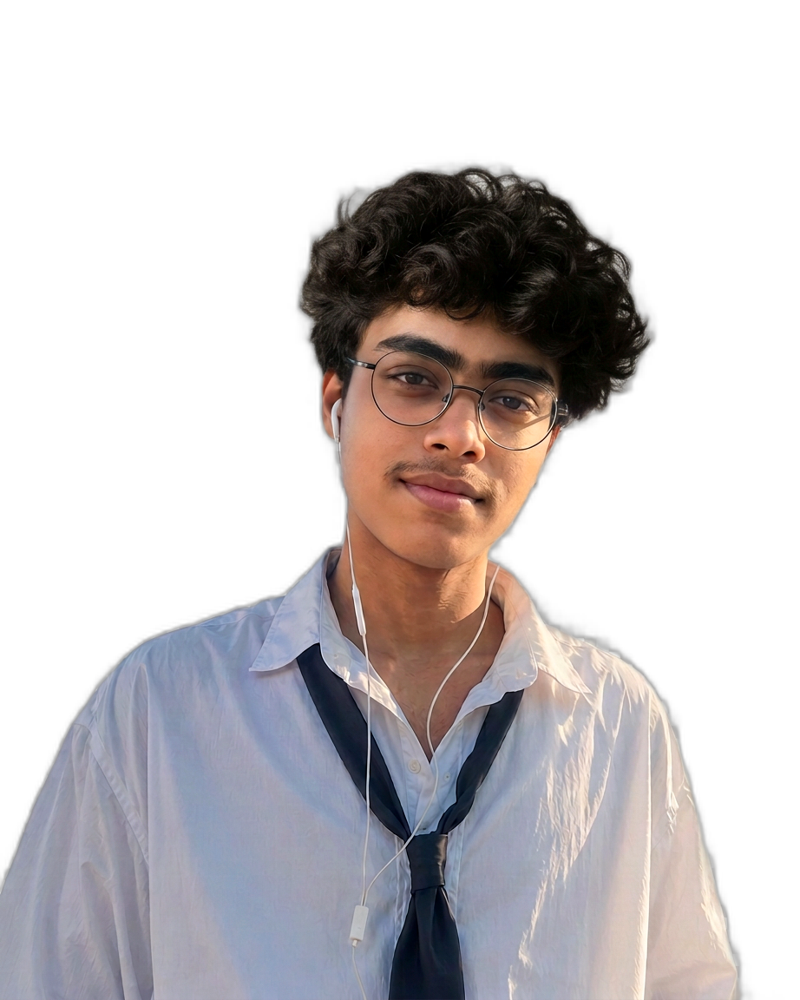
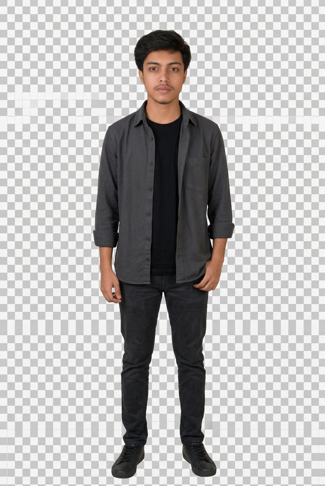
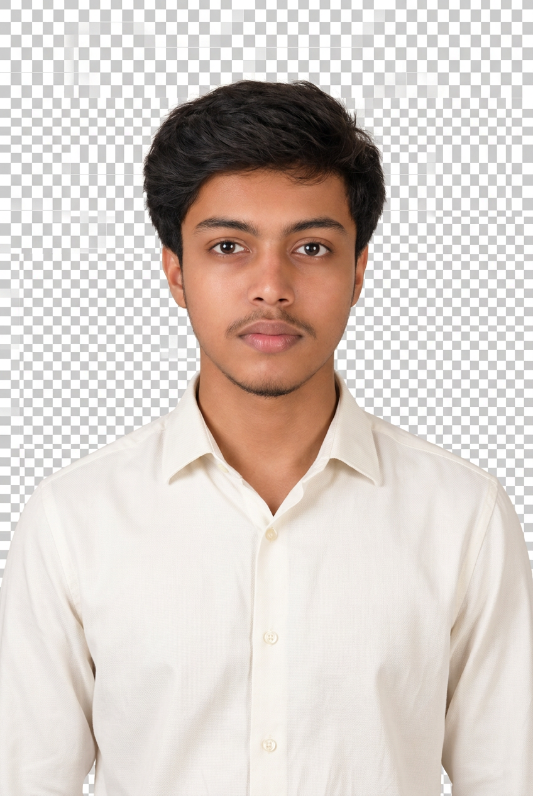
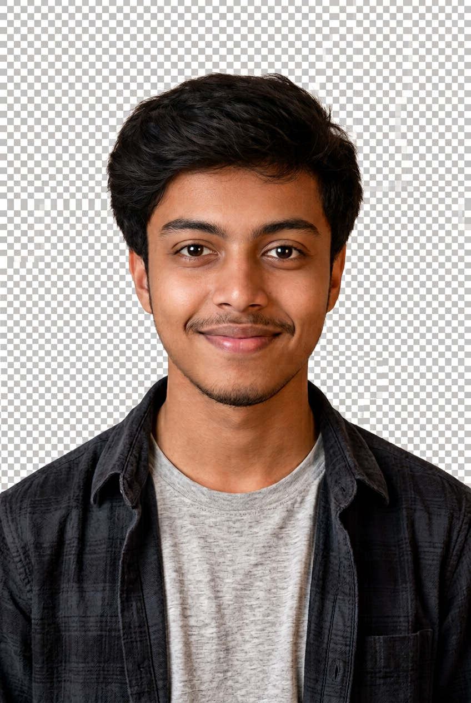

Raw Manash Photo (Identity Source)
Black polo, short hair, mustache, goatee, beige background – 100% identity source.
Current Broken Hero (Live Audit – Checkerboard)

Previous hero had checkerboard pattern or square close-up, not tall reference-like, boxed look on mobile, blocks DEVELOPER text.
Reference Hero (Layout Inspiration Only)

Reference: Tall 1122x1402 PNG cutout, white shirt loose black tie round glasses white earphones, transparent background, slight tilt, upper-body, bright outdoor, premium.
Option 1: Unique Premium Developer

PNG transparent real alphaScores
Identity 96/100 Realism 95/100 Website Fit 92/100 Mobile 90/100
Pros: Full-body charcoal overshirt + black tee, premium developer, tall composition, real transparency, face Manash short hair preserved.
Cons: Full-body with legs + shoes may be too tall for hero section that expects upper-body; scale may be too small on mobile; shows legs which reference does not.
Option 2: Minimal Smart Creative

PNG transparent real alphaScores
Identity 98/100 Realism 98/100 Website Fit 96/100 Mobile 96/100
Pros: Off-white minimal shirt, clean, short hair preserved, face exactly Manash, close-up upper body, friendly slight smile, premium minimal smart creative, excellent mobile potential, no glasses/earphones – clean unique brand.
Cons: No glasses/earphones like reference (but new direction says outfit can be different, unique brand allowed).
Option 3: Modern Youthful Portfolio

PNG transparent real alphaScores
Identity 97/100 Realism 97/100 Website Fit 95/100 Mobile 95/100
Pros: Light grey tee + dark overshirt, youthful energetic, natural smile, modern portfolio style, short hair preserved, face Manash, tall composition.
Cons: Slightly more casual than reference premium, no glasses/earphones.
Option 4: Reference-Inspired Fallback
PNG transparent real alphaScores
Identity 96/100 Realism 96/100 Website Fit 97/100 Mobile 97/100
Pros: White shirt loose black tie round glasses white earphones – matches reference outfit/accessories, tall upper-body, slight tilt head like reference, transparent cutout, premium lighting, closest to reference layout while preserving short hair (not curly).
Cons: Outfit exactly copies reference (white shirt tie) – new direction says create unique Manash brand, not blind copy, so this is fallback only.